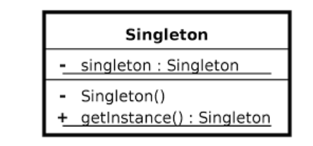
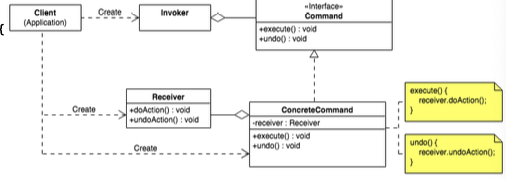

🔄 PATTERN 1 : STATE
✅ Comment le reconnaître
Trucs et astuces :
- ✅ Un objet change de comportement quand son état interne change.
- ✅ Le contexte délègue les requêtes à un objet State.
- ✅ Les transitions d'état sont gérées par les états eux-mêmes.
Phrase clé : "Je reconnais State car Cellule (Context) délègue à Situation (State) qui peut être EstVivante ou EstMorte."
📊 Schéma théorique

🖼️ Schéma de l'exercice
🔍 Correspondance Théorie / Exercice
| Participants théoriques | Noms utilisés dans le code | Explication |
|---|---|---|
| Context | Cellule |
Maintient une référence vers l'état actuel et délègue les opérations. |
| State | Situation |
Interface/classe abstraite pour tous les états. |
| ConcreteStateA | EstVivante |
Comportement d'une cellule vivante. |
| ConcreteStateB | EstMorte |
Comportement d'une cellule morte. |
💻 Code de base
Context (Cellule) : Délègue à l'état et change d'état selon le résultat.
public class Cellule {
private Situation situation; // État actuel
public void vit() {
situation = situation.vit(); // Transition d'état
}
public void meurt() {
situation = situation.meurt();
}
public boolean estVivante() {
return situation.estVivante(); // Délégation simple
}
}ConcreteState (EstVivante) : Gère les transitions et le comportement.
public class EstVivante extends Situation {
private static EstVivante instance = null;
public static EstVivante getInstance() {
if (instance == null) instance = new EstVivante();
return instance;
}
public Situation vit() {
return this; // Reste vivante
}
public Situation meurt() {
return EstMorte.getInstance(); // Transition vers morte
}
public boolean estVivante() {
return true;
}
}ConcreteState (EstMorte) : Transitions inverses.
public class EstMorte extends Situation {
private static EstMorte instance = null;
public static EstMorte getInstance() {
if (instance == null) instance = new EstMorte();
return instance;
}
public Situation vit() {
return EstVivante.getInstance(); // Transition vers vivante
}
public Situation meurt() {
return this; // Reste morte
}
public boolean estVivante() {
return false;
}
}🔒 PATTERN 2 : SINGLETON
✅ Comment le reconnaître
Trucs et astuces :
- ✅ Une seule instance de la classe dans toute l'application.
- ✅ Constructeur privé pour empêcher l'instanciation directe.
- ✅ Méthode statique
getInstance()pour obtenir l'instance.
Phrase clé : "Je reconnais Singleton car EstVivante et EstMorte ont un constructeur privé et une méthode getInstance()."
📊 Schéma théorique
🖼️ Schéma de l'exercice
🔍 Correspondance Théorie / Exercice
| Participants théoriques | Noms utilisés dans le code | Explication |
|---|---|---|
| Singleton | EstVivante, EstMorte |
Classes avec une seule instance partagée. |
| getInstance() | getInstance() |
Retourne l'instance unique, la crée si nécessaire. |
💻 Code de base
Singleton (EstVivante) : Une seule instance pour toutes les cellules vivantes.
public class EstVivante extends Situation {
private static EstVivante instance = null; // Instance unique
private EstVivante() {} // Constructeur privé
public static EstVivante getInstance() {
if (instance == null)
instance = new EstVivante();
return instance;
}
}👁️ PATTERN 3 : OBSERVER
✅ Comment le reconnaître
Trucs et astuces :
- ✅ Un sujet notifie automatiquement plusieurs observateurs.
- ✅ Méthodes
attach(),detach(),notify(). - ✅ Les observateurs implémentent une méthode
update().
Phrase clé : "Je reconnais Observer car JeuDeLaVie (Subject) notifie Espion (Observer) via prévenirEspions()."
📊 Schéma théorique

🖼️ Schéma de l'exercice
🔍 Correspondance Théorie / Exercice
| Participants théoriques | Noms utilisés dans le code | Explication |
|---|---|---|
| Subject | JeuDeLaVie |
Maintient une liste d'observateurs et les notifie. |
| Observer | Espion |
Interface pour les observateurs. |
| ConcreteObserver | JeuDeLaVieGUI |
Implémente l'interface et réagit aux notifications. |
| attach() | attacher() |
Enregistre un observateur. |
| detach() | détacher() |
Supprime un observateur. |
| notify() | prévenirEspions() |
Notifie tous les observateurs. |
| update() | utiliserRenseignements() |
Appelée quand le sujet change. |
💻 Code de base
Subject (JeuDeLaVie) : Gère les observateurs et les notifie.
public class JeuDeLaVie {
private List espions;
public void attacher(Espion espion) {
this.espions.add(espion);
}
public void détacher(Espion espion) {
this.espions.remove(espion);
}
public void prévenirEspions() {
for (Espion espion : espions)
espion.utiliserRenseignements();
}
} Observer (Espion) : Interface pour les observateurs.
public interface Espion {
void utiliserRenseignements();
}ConcreteObserver (JeuDeLaVieGUI) : Réagit aux notifications.
public class JeuDeLaVieGUI implements Espion {
public void utiliserRenseignements() {
repaint(); // Redessine l'interface
}
}🕵️ PATTERN 4 : VISITOR
✅ Comment le reconnaître
Trucs et astuces :
- ✅ Ajoute des opérations sans modifier les classes visitées.
- ✅ Méthode
accept(Visitor)dans les éléments. - ✅ Méthodes
visit()spécifiques pour chaque type.
Phrase clé : "Je reconnais Visitor car Cellule accepte Parcourir via generer() qui appelle parcourtCelluleVivante/Morte()."
📊 Schéma théorique

🖼️ Schéma de l'exercice
🔍 Correspondance Théorie / Exercice
| Participants théoriques | Noms utilisés dans le code | Explication |
|---|---|---|
| Visitor | Parcourir |
Interface abstraite pour les visiteurs. |
| ConcreteVisitor | ParcourtNormal, ParcourtFort |
Implémentent les règles du jeu. |
| Element | Cellule |
Accepte les visiteurs. |
| accept() | generer() |
Délègue au visiteur selon l'état. |
| visit() | parcourtCelluleVivante(), parcourtCelluleMorte() |
Traite chaque type de cellule. |
💻 Code de base
Visitor (Parcourir) : Définit les méthodes de visite.
public abstract class Parcourir {
public abstract void parcourtCelluleVivante(Cellule cellule,
JeuDeLaVie jeu,
List activites);
public abstract void parcourtCelluleMorte(Cellule cellule,
JeuDeLaVie jeu,
List activites);
} ConcreteVisitor (ParcourtNormal) : Règles standard.
public class ParcourtNormal extends Parcourir {
public void parcourtCelluleVivante(Cellule cellule, JeuDeLaVie jeu,
List activites) {
int n = cellule.nombreDeVoisins(jeu);
if (n != 2 && n != 3) {
activites.add(new Meurt(cellule));
}
}
public void parcourtCelluleMorte(Cellule cellule, JeuDeLaVie jeu,
List activites) {
int n = cellule.nombreDeVoisins(jeu);
if (n == 3) {
activites.add(new Vit(cellule));
}
}
} Element (via Situation) : Délègue au visiteur.
// Dans EstVivante
public void generer(Cellule cellule, JeuDeLaVie jeu,
List activites, Parcourir parcourt) {
parcourt.parcourtCelluleVivante(cellule, jeu, activites);
}
// Dans EstMorte
public void generer(Cellule cellule, JeuDeLaVie jeu,
List activites, Parcourir parcourt) {
parcourt.parcourtCelluleMorte(cellule, jeu, activites);
} ⚡ PATTERN 5 : COMMAND
✅ Comment le reconnaître
Trucs et astuces :
- ✅ Encapsule une requête comme un objet.
- ✅ Permet de paramétrer, mettre en file, annuler des opérations.
- ✅ Sépare l'invocateur du receveur.
Phrase clé : "Je reconnais Command car Activite (Command) encapsule les actions Vit et Meurt exécutées par Cellule (Receiver)."
📊 Schéma théorique
🖼️ Schéma de l'exercice
🔍 Correspondance Théorie / Exercice
| Participants théoriques | Noms utilisés dans le code | Explication |
|---|---|---|
| Command | Activite |
Interface abstraite pour les commandes. |
| ConcreteCommand | Vit, Meurt |
Commandes concrètes qui encapsulent les actions. |
| Receiver | Cellule |
Objet qui exécute réellement l'action. |
| Invoker | JeuDeLaVie |
Stocke et exécute les commandes. |
| execute() | activer() |
Exécute la commande. |
💻 Code de base
Command (Activite) : Interface abstraite.
public abstract class Activite {
private Cellule cellule;
public Activite(Cellule cellule) {
this.cellule = cellule;
}
public abstract void activer(); // execute()
public Cellule getCellule() {
return cellule;
}
}ConcreteCommand (Vit) : Commande pour faire vivre une cellule.
public class Vit extends Activite {
public Vit(Cellule cellule) {
super(cellule);
}
public void activer() {
getCellule().vit(); // Appelle le Receiver
}
}ConcreteCommand (Meurt) : Commande pour tuer une cellule.
public class Meurt extends Activite {
public Meurt(Cellule cellule) {
super(cellule);
}
public void activer() {
getCellule().meurt(); // Appelle le Receiver
}
}Invoker (JeuDeLaVie) : Stocke et exécute les commandes.
public void avancer() {
ArrayList activites = new ArrayList();
// Génère les commandes
for (int i = 0; i < lignes; i++)
for (int j = 0; j < colonnes; j++)
grille[i][j].generer(this, activites, parcourt);
// Exécute toutes les commandes
for (Activite activité : activites)
activité.activer();
} 💡 Conseils pour identifier les patterns
🎯 Comment reconnaître COMMAND ?
Questions à se poser :
- Est-ce qu'une ACTION devient un OBJET ?
// Au lieu de : cellule.vit(); // On fait : Activite action = new Vit(cellule); - Est-ce qu'on STOCKE les actions avant de les exécuter ?
ArrayListactivites = new ArrayList<>(); activites.add(new Meurt(cellule)); - Y a-t-il une méthode execute() commune ?
public abstract void activer(); // Le "execute()" - Exécution différée ?
for (Activite act : activites) act.activer();
✅ Si OUI aux 4 → C'est COMMAND !
🔍 Comment reconnaître OBSERVER ?
Indices clairs :
- ✅ Une liste d'observateurs :
List<Espion> espions - ✅ Méthodes
attach()/detach() - ✅ Méthode
notify()qui parcourt les observateurs - ✅ Méthode
update()dans les observateurs
💡 Astuce : Cherche les boucles for (Observer o : observers) !
🔄 Comment reconnaître STATE ?
Signes révélateurs :
- ✅ Un attribut d'état :
private Situation situation; - ✅ Les méthodes retournent un nouvel état :
return EstMorte.getInstance(); - ✅ Le contexte change d'état :
situation = situation.vit(); - ✅ Évite les
if/elsesur l'état
💡 Question clé : "L'objet change-t-il de comportement selon son état interne ?"
🕵️ Comment reconnaître VISITOR ?
Caractéristiques :
- ✅ Méthode
accept(Visitor)dans les éléments - ✅ Plusieurs méthodes
visit(TypeA),visit(TypeB) - ✅ Double dispatch : l'élément rappelle le visiteur avec son type
⚠️ Attention : Visitor peut être une abstract class, pas forcément une interface !
🔒 Comment reconnaître SINGLETON ?
C'est simple :
- ✅ Constructeur privé :
private EstVivante() {} - ✅ Attribut statique :
private static EstVivante instance; - ✅ Méthode
getInstance()statique
💡 En un coup d'œil : Si tu vois private Constructor() + getInstance() → Singleton !
⚠️ Pièges à éviter
Command vs Strategy
- Command : Encapsule une action (stockée et exécutée plus tard)
- Strategy : Encapsule un algorithme (choisi et utilisé immédiatement)
State vs Strategy
- State : L'objet change d'état lui-même :
situation = situation.vit() - Strategy : Le client choisit la stratégie de l'extérieur
Visitor vs Template Method
- Visitor : Double dispatch + opérations externes
- Template Method : Squelette d'algorithme + méthodes abstraites internes
🎓 Récapitulatif - Le test rapide
| Pattern | Question clé | Indice visuel |
|---|---|---|
| State | Le comportement change selon l'état interne ? | situation = situation.vit() |
| Singleton | Une seule instance dans toute l'appli ? | private Constructor() + getInstance() |
| Observer | Notifier plusieurs objets automatiquement ? | for (Observer o : observers) o.update() |
| Visitor | Ajouter des opérations sans modifier les classes ? | accept(visitor) + visitor.visit(this) |
| Command | Transformer une action en objet stockable ? | List<Command> + cmd.execute() |